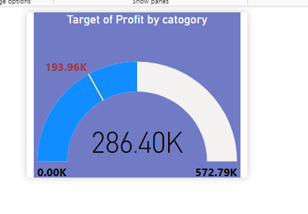
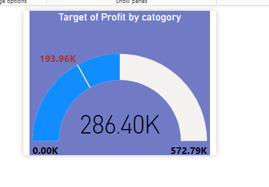

Sales data (Power pi Dashboard )


 

Project Overview
This power pi dashboard project provides a comprehensive overview of sales performance and KPIs.
It includes interactive dashboard, advanced charts, and Power Query transformations to clean and data modeling
Highlights in project
Total transaction: 9,994
Total Sales: 2.30 M
Total Profit: 286,40 K
Total Quantity : 38 K
AVG. Discount: 15.6%
Key Features
- Data cleaning using Power Query
- Data modeling
- use dax for create new measures
- use cocdtional fomating to create highlight on the loss
- Interactive dashboard with slicers and filters
- Insightful KPI calculations
Technologies Used
Power Query , Data Modeling ,DAX (Measures & Calculated Columns,calculated tables) , Conditional Formatting , Drillthrough Retention Rate by Customer and Acquisition Rate by Customer , Bookmarks